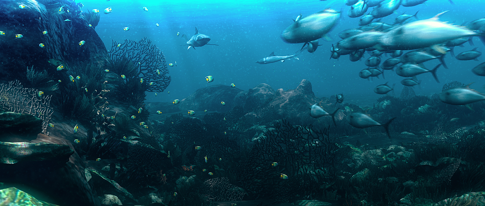
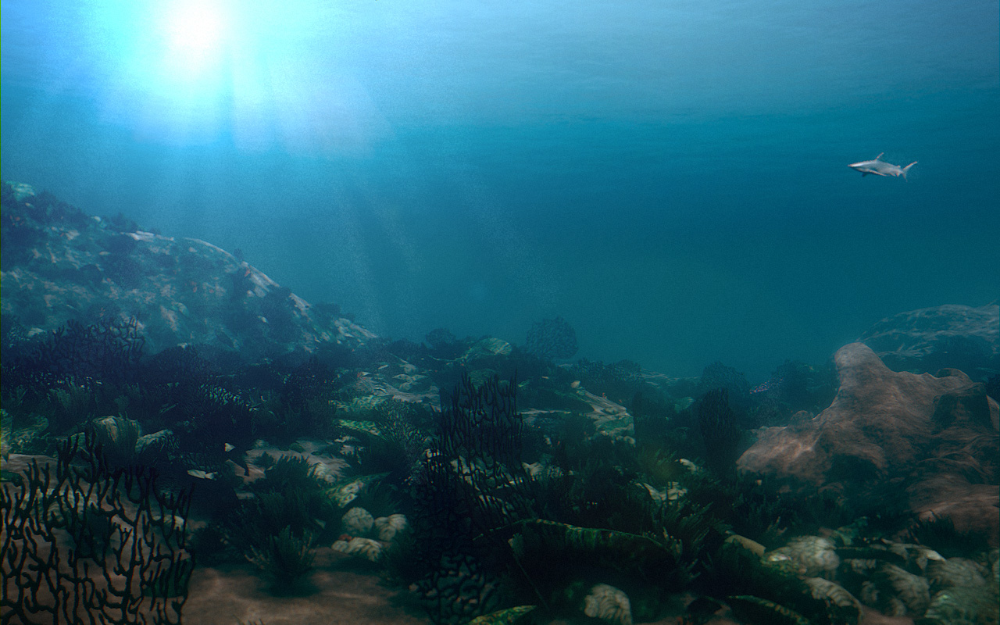
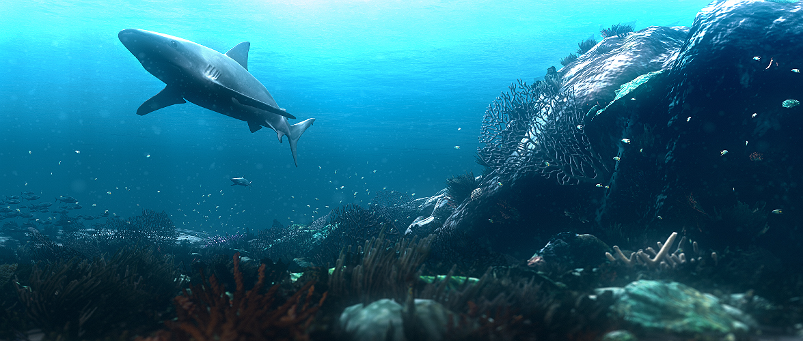
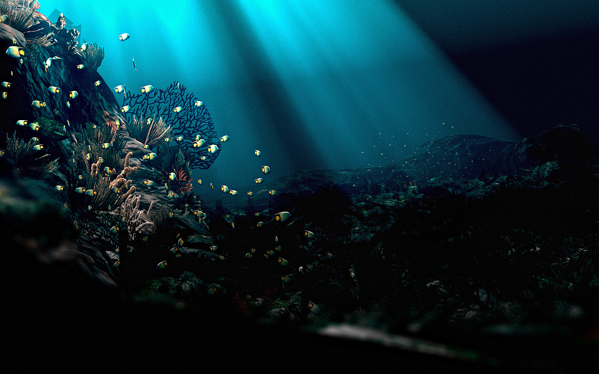
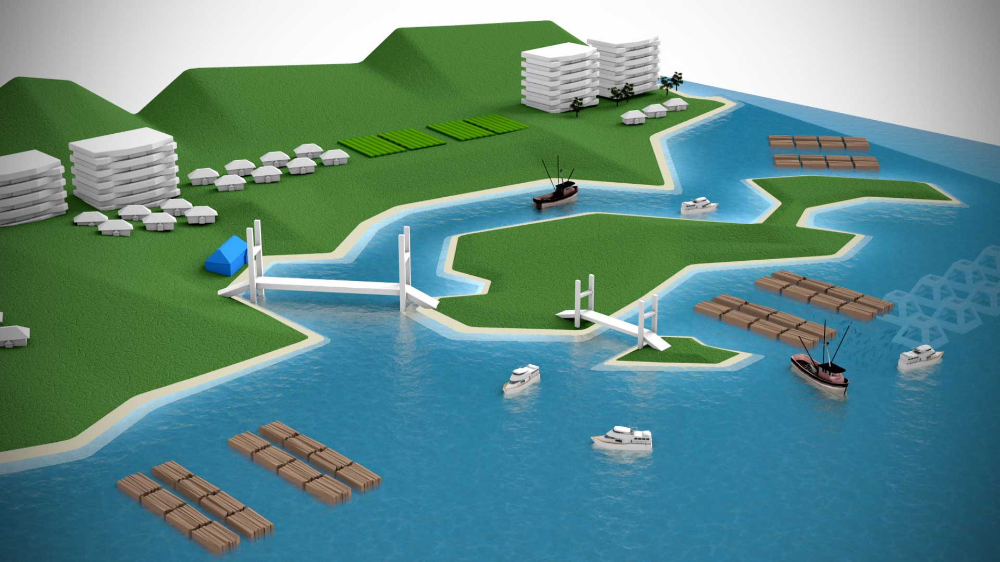

Marine Ecosystem Visualization For University of British Columbia
I had the opportunity to work at the UBC Fisheries Center as a visualization artist to create various interactive content and videos for science communication purposes.
It was a fun work environment where Dalai Felinto and I took on many different projects. It was here that I learned the importance of production planning and pipelines. Without which most project would just collapse under its own weight.
Fish are friends. Not food.
Sometimes, the need to convey certain data is in conflict with my desire to have more artistic freedom. While the image below is dramatic, it is too dark and moody to be used in a video.
Experimenting with a different visual style.
※